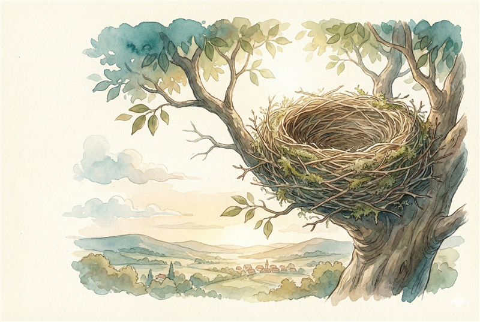

Preparação do Portador
[Foco: Geometria dos números 7 e 8, distinção visual]
Dica do Coração: Hoje olhamos de perto o 7 e o 8.
O 7 é como um penhasco, reto e firme.
O 8 é como uma pista de dança infinita, curvo e suave.
Íris nos ensina a amar a forma deles.
O 7 é como um penhasco, reto e firme.
O 8 é como uma pista de dança infinita, curvo e suave.
Íris nos ensina a amar a forma deles.
🎯 Essencial:
- Cartões grandes com 7 e 8 (2)
- Areia (1)
- Card Íris (1)
🌟 Seu filho vai descobrir: Que números têm "personalidades" visuais diferentes.
🛡️ Protocolo de Impecabilidade: TRACE NA AREIA ou TINTA. Sinta a reta do 7.
Sinta a curva infinita do 8.
🕊️ Nota de Graça: Íris diz: 'Olhe bem. A beleza está no detalhe.' — a curva do 8 não tem fim!
Ritual de Abertura
Ambiente tranquilo, foco sensorial.
🌫️ Transição: Feche os olhos. O vento parou.
Íris pousa com suavidade, segurando uma lupa.
O ar está quieto. O tempo parece parar.
Íris aponta a asa para uma forma no chão.
"Olhe bem. A beleza está no detalhe."
Íris aponta a asa para uma forma no chão.
"Olhe bem. A beleza está no detalhe."
Portador da Tocha
(suave)
Íris quer nos mostrar um segredo.
Chegue bem perto. Vamos olhar os detalhes.
Chegue bem perto. Vamos olhar os detalhes.
Visualizar

🗺️ A Jornada
O Penhasco do Sete
📍 Local: Ninho Mirante
Visualizar

Mostre o 7 grande. Passe o dedo nas linhas retas.
"Sinta como é reto! Zuuup (teto), Zuuuum (descida)!"
"Sinta como é reto! Zuuup (teto), Zuuuum (descida)!"
iris
(preciso)
"Veja o Sete. Ele tem um teto e um escorregador."
[Íris traça linhas retas no ar]
"Reto. Firme. Ângulo!"
[Íris traça linhas retas no ar]
"Reto. Firme. Ângulo!"
A Dança do Oito
Mostre o 8 grande. Siga a curva infinita.
"É uma pista de corrida! Não tem pontas!"
"É uma pista de corrida! Não tem pontas!"
iris
(fluido)
"Agora veja o Oito. Ele nunca para!"
[Íris faz o movimento do infinito]
"Curva pra cá, curva pra lá. O abraço sem fim."
[Íris faz o movimento do infinito]
"Curva pra cá, curva pra lá. O abraço sem fim."
Sentindo a Forma
Peça para a criança traçar na areia/tinta.
"Faça um 7 reto. Agora um 8 curvo."
"Faça um 7 reto. Agora um 8 curvo."
iris
(convidativo)
"Feche os olhos. Seus dedos sabem o caminho?"
"O Sete espeta. O Oito abraça."
"O Sete espeta. O Oito abraça."
🧱 O Concreto
Atividade Concreta
Passo a Passo:
-
Mostre o 7. Trace o dedo. "Reto, desce."
Fala sugerida: "O 7 é feito de linhas retas!" -
Mostre o 8. Trace o dedo acompanhando a curva.
Fala sugerida: "O 8 é feito de curvas. Ele gira e gira!" -
Use areia/farinha. Trace o 7.
Fala sugerida: "Faça o 7 na areia. Sente como é direto?" -
Use areia/farinha. Trace o 8 (boneco de neve ou infinito).
Fala sugerida: "Agora o 8. Curva, volta, fecha!"
Narramos Juntos
Limpe os dedos da areia/tinta.
"Íris gostou de ver você sentindo os números."
"Íris gostou de ver você sentindo os números."
iris
"O que você descobriu hoje na Clareira? O que contaria para o Melquior?"
Perguntas do Coração:
- Qual é reto? Qual é curvo?
- O 7 parece o quê? (Bandeira, machado?)
- O 8 parece o quê? (Pista, boneco?)
Ritual de Fechamento
iris
(sabio)
"O mundo é feito de retas e curvas."
"O Sete aponta. O Oito envolve."
"O Sete aponta. O Oito envolve."
Portador da Tocha
Curva, volta, fecha. Oito. Voltamos.
Conexão da Jornada
⬅️ Última Aventura: Seus olhos são rápidos! Agora, vamos sentir a forma do 7 e do 8.
➡️ Próxima Aventura: Você conheceu o 7 e o 8. Amanhã, consolidamos tudo o que aprendemos!
Ir para Consolidação →
Para a Família
📚 Por que isso importa:
Perceber os atributos geométricos (reto vs curvo) ajuda na escrita.
Distingue números que crianças confundem.
Distingue números que crianças confundem.
🧠 Método CPA (Jerome Bruner):
- Concreto: Tátil (areia, textura).
- Pictórico: Vetado.
- Abstrato: Forma do glifo.
🏛️ Princípio Charlotte Mason:
"Children are born persons."
A criança aprecia a beleza da forma, não só a utilidade.
"Children are born persons."
A criança aprecia a beleza da forma, não só a utilidade.
📘 Conexão TGTB:
Corresponde à lição de Prática de Números. Íris traz a estética e o detalhe.
Corresponde à lição de Prática de Números. Íris traz a estética e o detalhe.
🌀 Currículo em Espiral (Bruner):
- Agora: Geometria e Escrita — Sementes — formas básicas (reta/curva)
- Depois: Raízes — geometria plana, polígonos
✨ Reflexão Espiritual:
Deus criou linhas e curvas. A justiça é reta. A graça nos envolve.
Deus criou linhas e curvas. A justiça é reta. A graça nos envolve.
🕊️ Nota de Graça:
Se o 8 sair torto, Íris diz: "É um 8 dançarino! Ele está feliz!"
Se o 8 sair torto, Íris diz: "É um 8 dançarino! Ele está feliz!"